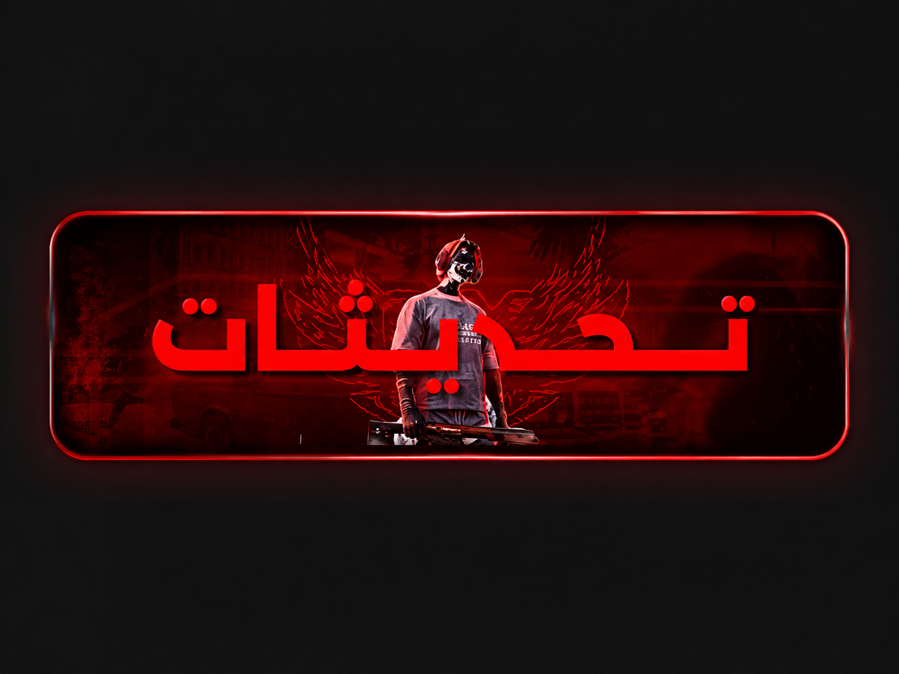

تحديث السيرفر
إعلان مهم بخصوص الفعاليات
** بخصوص الناس لي خسرت دراهم على اللواطا منسيناكمش مرا على مدة نديرو les éventes على لواطا وعلى دراهم وهاذ السيستام درناه باش تزيد قينة الـ VIP والسلام عليكم **
**📺 قناة النهار | إعلان إخباري 📰 عاجل | قناة النهار شهدت المدينة اليوم افتتاح الفرع الثاني لسوق السيارات الخاص بالمالك زينو، وذلك بعد النجاح الكبير الذي حققه الفرع الأول. ويقدم الفرع الثاني خدمات: 🚗 بيع السيارات 💰 شراء السيارات 🔄 تبديل السيارات وأكد السيد زينو أن افتتاح هذا الفرع يأتي لتلبية الطلب المتزايد وتقديم خدمات أفضل لسكان المدينة. 📺 قناة النهار | ننقل الحدث كما هو.**